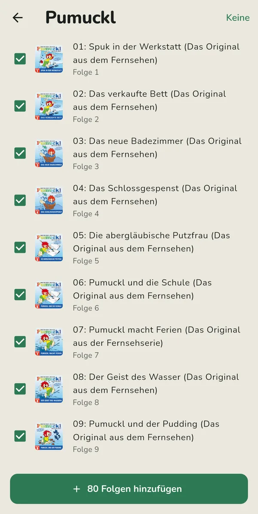

Für Eltern
Ihr entscheidet, was eure Kinder hören
Im Elternbereich fügt ihr neue Reihen hinzu, sortiert die Kacheln und packt sie in Ordner. Der Elternbereich ist mit einer PIN geschützt.
Hörspiele und Musik, von euch ausgesucht. Eure Kinder tippen auf eine Kachel und hören los, ohne Werbung und ohne Vorschläge, die ablenken.


Ein Hörspiel-Player, den Kinder allein bedienen können. Große Kacheln, Lesen ist nicht nötig.
Im Elternbereich fügt ihr neue Reihen hinzu, sortiert die Kacheln und packt sie in Ordner. Der Elternbereich ist mit einer PIN geschützt.

lauschi schlägt keine weiteren Serien vor und zeigt keine Werbung. Eure Kinder hören nur, was ihr ausgesucht habt.

Alle Folgen in der richtigen Reihenfolge. lauschi merkt sich, wo euer Kind aufgehört hat, und macht genau da weiter.
Ihr wählt aus ARD Sounds und Apple Music aus. Eure Kinder sehen nur die Kacheln, die ihr angelegt habt.
Früher ARD Audiothek. Tausende kostenlose Hörspiele, ganz ohne Abo: Betthupferl, Die Sendung mit der Maus, CheckPod, Ohrenbär und mehr.

Über 300 Reihen von TKKG bis Conni, schon vorsortiert und in der richtigen Reihenfolge. Hörbücher und Kinderlieder haben eigene Einträge, Sammelalben und Filmmusik sind aussortiert.

lauschi installieren und eine PIN für den Elternbereich festlegen.
Im Elternbereich Reihen aus ARD Sounds oder Apple Music durchstöbern und hinzufügen.
Handy oder Tablet in die Hand geben. Kachel antippen, Hörspiel läuft.
Kostenlos und ohne Tracking. lauschi zeigt keine Werbung und hat keine In-App-Käufe. Die App braucht kein Konto und hat keine Analyse-Tools eingebaut. Kacheln und Wiedergabepositionen bleiben lokal auf deinem Gerät.
Welche Reihe fehlt dir, was hat dich verwirrt, was mag dein Kind? Schreib mir an hallo@lauschi.app. Ich freue mich über euer Feedback.